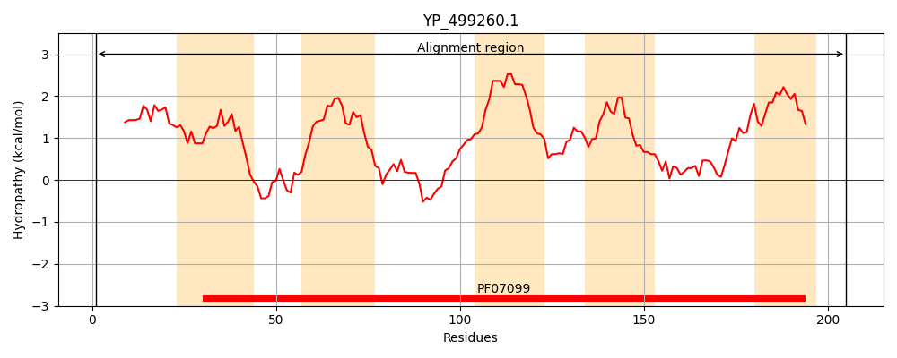

Hit Accession: Q4L4B5
Hit TCID: 9.B.286.1.4
Hit Description: gnl|BL_ORD_ID|13825 gnl|TC-DB|Q4L4B5|9.B.286.1.4 Uncharacterized protein OS=Staphylococcus haemolyticus (strain JCSC1435) OX=279808 GN=SH2201 PE=4 SV=1
Mach Len: 205
e:0.000000
Query TMS Count : 5
Hit TMS Count: 5
TMS-Overlap Score: 4.900000
Predicted Substrates:None
BLAST Alignment:
Score: 729 , Bit scores: 285 bits, E-value: 4.4e-99, Alignment length: 205, Percentage identity: 65
Query: 1 MQSRYIARIYFLILFIVSLFETKIFQFMTLNLFLAYIPFELSLLLRLFKPNKKYEWPLFIIYSFIFVLLLPNTFYMVTDLIHLNQFQFNFYAGLNLSEWKYFTYLLLGVFLAVYVMILIYFEILTLTSHRWLNRLIVVVLMFLNGFGIYIGRFLRLHSVYFFNEPLHVLNHILESLTLKTAMFVCFMVVMQAAILLFGKGVRLNK 205
M SRYIARIYF+ILF SLFET++F FM+LNLFLAYIPFEL LLLRLFKP KKYEWPLFII+ IFVLL+PNTFYM+TDLIHLNQF F+FY LN+ EW YFTYLLLGVFLA+Y MILI+ ++ TS W+NR ++VVLMFLNG GIY+GRFLR H+V+ EP ++ ++ SL ++ F+ MV++Q I++F KGVR+ K
Sbjct: 1 MTSRYIARIYFIILFTFSLFETRVFNFMSLNLFLAYIPFELCLLLRLFKPRKKYEWPLFIIFGLIFVLLVPNTFYMLTDLIHLNQFTFDFYVQLNIMEWLYFTYLLLGVFLAMYCMILIFINLMHFTSKLWINRTLIVVLMFLNGLGIYMGRFLRFHTVHLITEPFTIIRQVIASLNTQSITFILLMVLLQTVIIIFVKGVRVAK 205 | Protein Hydropathy Plots: |
|---|
|  | |
Pairwise Alignment-Hydropathy Plot:
|
|---|
|